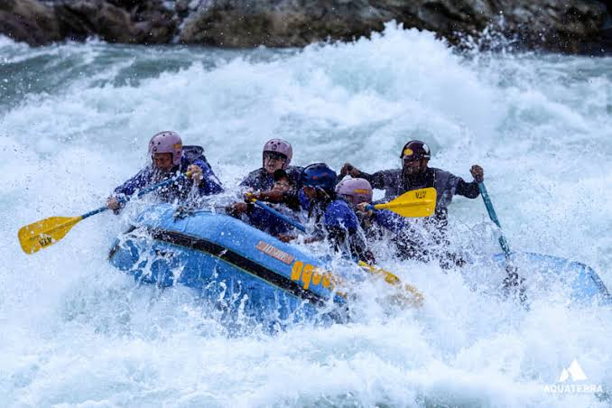
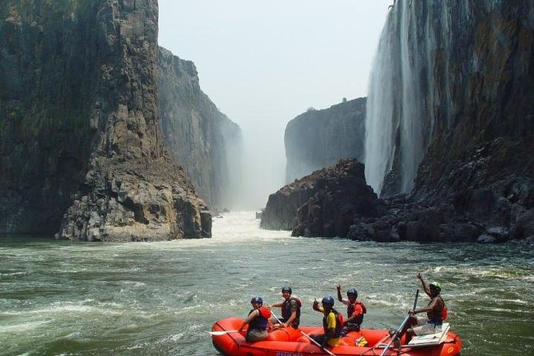

Are You Ready To Book?
Need help with anthing at all.Click the link below
Contact UsOur Trips

Class I Rapids
Class I rivers are great for rafting for beginners and families. The water moves smoothly with very few obstacles. These sections are perfect for relaxed paddling or taking in the scenery. You might see small ripples, but there’s almost no risk involved. These are class 1 rapids—ideal for those just starting out

Class III Rapids
Class III rapids bring a noticeable step up in intensity. They have stronger currents, irregular waves, and narrower paths. You might get splashed and bumped around a bit as you navigate medium-sized waves and small drops. These sections are great for people with some rafting experience who want more action. You might be wondering, "are class 3 rapids dangerous?" They can be challenging but are manageable with the right skills and guidance. Many whitewater rafting classes cover how to handle these

Class IV Rapids
Class VI rapids are the most dangerous. They’re unpredictable and carry significant risk, even for professionals. These rapids are usually tackled only for exploration or under controlled conditions. They’re not suitable for recreational trips. If you’re curious about the nature of class 6 white water rafting, know that these waters are often considered unrunnable or only for experts in exceptional conditions.
Available Trips
| Trip Name | Duration | Difficulty level | Price |
|---|---|---|---|
| Family Float Trip | 2 hours | Easy | 45 |
| Salmon River Rafting | 1 day | Easy | 75 |
| Hells Canyon Adventure | 3days | Hard | 135 |